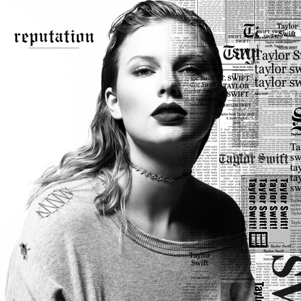

Artist Rank: 1
Album Rank: 22
96% Match
Taylor Swift's sixth album is an aggressive, lascivious display of craftsmanship, but her full embrace of modern pop feels sadly conventional. (Pitchfork)
While 'Reputation' is surprisingly introspective, "because she's Taylor Swift, she can't stop being her own turbulent, excessive, exhausting and gloriously extra self. (Rolling Stone)
On Reputation, Swift has finally realized that being right or getting the last word isn't the most important thing. (Billboard)
It's Swift's refusal to have to choose between delightfully effervescent sonic values and raw, classic candor that makes “Reputation” the pop album of the year. (Variety)